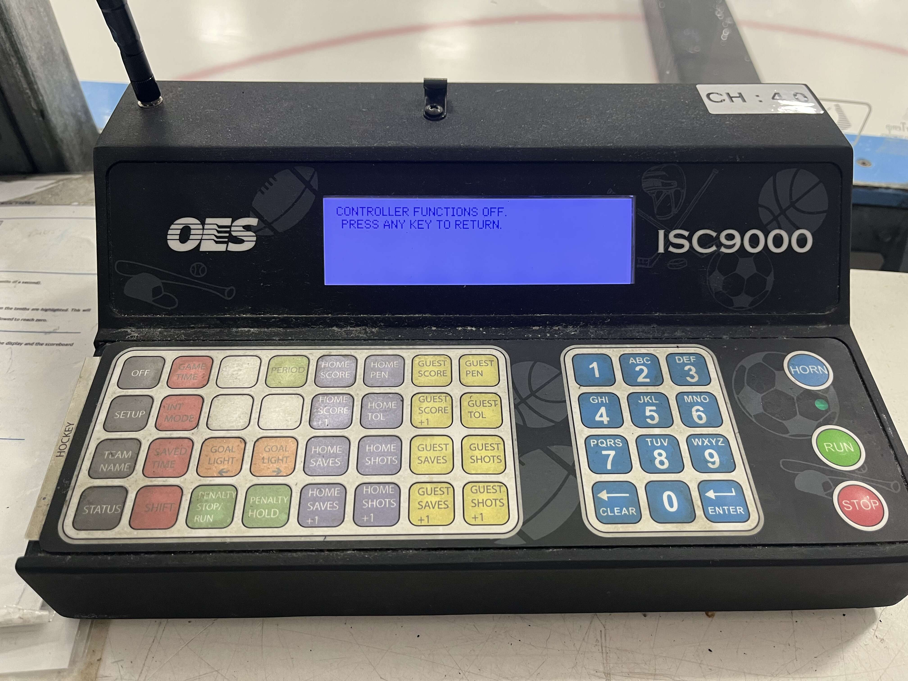

LEARN YOUR RINK'S CONTROLLER
OES ISC9000
The full OES hockey console.
ARENA SCOREBOARD● CLOCK STOPPED
RINKSIDE ARENA HOCKEY
SHOTS 0 HOME · GUEST 0
0GOAL LIGHT
15:00
PERIOD 10GOAL LIGHT
—
◉PENALTIES RUN
—
CONTROL CONSOLEPhoto & manual ↓
Physical key positions preserved · swipe the console sideways on a phone
Controller photo & manual · OES ISC9000

Matched to the real panel
Compare the display, button groups and keypad with your rink’s console. This is an independent training aid; installed options and firmware can differ.
ISC9000 J12 hockey operations; four penalty rows, two active, queue hold and penalty stop/run enabled, manual intermission and shift timing. SAVED TIME requires a hold. Names use full/short fields; display-size and saved default-name programming are omitted. SAVES, TOL, goal-light hardware, OFF, SETUP, network configuration, shot clocks and other sports are inactive. Firmware and overlays vary.